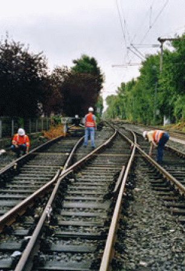

Unter bestimmten Voraussetzungen dürfen sich kleine Arbeitsgruppen von bis zu drei Beschäftigten selbst sichern. Die Tätigkeit darf dabei von einer, zwei oder drei Personen ausgeführt werden. Dazu muss in jedem Einzelfall eine Gefährdungsbeurteilung durchgeführt werden, die insbesondere die Eignung und die Qualifikation der Beschäftigten, die Art der Arbeiten sowie die örtlichen und betrieblichen Verhältnisse berücksichtigt. Das Ergebnis dieser Gefährdungsbeurteilung ist die angemessene Sicherungsmaßnahme zum Schutz der Beschäftigten (BGV D 33 bzw. GUVV D 33 § 6 [14], [15]).
Die Entscheidung, ob unter Selbstsicherung gearbeitet werden soll, trifft der ausführende Unternehmer. Die Entscheidung, unter welcher Sicherungsmaßnahme gearbeitet werden muss, trifft die für den Bahnbetrieb zuständige Stelle (BzS). Anhang 4 enthält eine Übersicht zur Vorgehensweise bei der DB.

| Abb. 5-1: | Arbeiten in einer Kleingruppe. |
Folgende Sicherungsmaßnahmen stehen in der Reihenfolge ihrer Wertigkeit zur Verfügung:
Die Sicherungsmaßnahmen nach Nr. 3. und Nr. 4. sind in Gleisbereichen, die mit Geschwindigkeiten über 200 km/h befahren werden, nicht zulässig.
Neben den Gefährdungen durch Fahrten im Arbeitsgleis gehen Gefährdungen von den Fahrten im Nachbargleis aus. Im Bereich der DB darf bei Arbeiten von Kleingruppen z. B. auf eine Warnung vor Fahrten im Nachbargleis verzichtet werden, wenn es sich bei den auszuführenden Arbeiten um kurzfristige Tätigkeiten geringen Umfanges handelt. Die Beurteilung der Gefährdung durch das Nachbargleis muss deshalb Teil der Gefährdungsbeurteilung sein.
Die Gefährdung der Beschäftigten durch Fahrten im Nachbargleis ist insbesondere abhängig von der Art der Tätigkeit, dem Umfang und damit der Dauer der Tätigkeit, dem Gleisabstand, der Anzahl der Fahrten im Nachbargleis.
Auf einer eingleisigen Strecke existiert keine Gefährdung durch ein Nachbargleis. Bei einem geringen Gleisabstand und/oder starkem Eisenbahnbetrieb auf dem Nachbargleis ist die von diesen Fahrten ausgehende Gefährdung hoch und kann in Abhängigkeit von der Dauer der Tätigkeiten eine Maßnahme zum Schutz der Beschäftigten vor Fahrten im Nachbargleis erforderlich machen. Die Entscheidung trifft die BzS.
Der Unternehmer teilt der für den Bahnbetrieb zuständigen Stelle Ort, Zeitpunkt, Art und Umfang der Arbeiten, die von bis zu drei Beschäftigten durchgeführt werden sollen, rechtzeitig mit (DB: Seite 1 des „kleinen“ Sicherungsplans 132.0118V05 [25]).
Der Unternehmer übernimmt dabei die Verantwortung:
Die Beschäftigten müssen körperlich und geistig geeignet sein, d. h. sie müssen sich in einem guten körperlichen Zustand befinden. Von Bedeutung sind hier u. a. das Sehen einschließlich Farbsehen, das Hören, das Herz- Kreislaufsystem. Der Bahnbetreiber DB hat Kriterien über diese körperliche Eignung festgelegt und lässt sie medizinisch feststellen.
Die Beschäftigten müssen in der Lage sein, die im Sicherungsplan angeordnete Sicherungsmaßnahme zu verstehen und vor Ort umzusetzen. Dazu gehört, die o. a. verschiedenen möglichen Sicherungsverfahren, die auch eine Kommunikation mit dem Fahrdienstleiter beinhalten können, zu beherrschen. Die Beschäftigten müssen zudem in der Lage sein, Situationen zu erkennen, in denen der Gleisbereich nicht mehr betreten werden darf bzw. verlassen werden muss.
Die Beschäftigten müssen über Orts- und Streckenkenntnis verfügen. Da auch Gefährdungen auf dem Weg zu und von der Arbeitsstelle auftreten können, ist Ortskenntnis gefordert. Die Streckenkenntnis ist im Sinne von Kenntnis über die eisenbahnbetrieblichen Gegebenheiten zu verstehen (d. h. in welchen Gleisen wird gefahren, wie ist der betriebliche Ansprechpartner zu erreichen, wo stehen die Signale, wie schnell wird gefahren, befindet sich die Arbeitsstelle im Gleis von A-Dorf nach B-Stadt oder im Gleis von B-Stadt nach A-Dorf?).
Die Beschäftigten müssen die Gefahren aus dem Bahnbetrieb kennen, es müssen also erfahrene Personen sein. „Alleinarbeiter“ müssen außerdem besonders unterwiesen sein. Diese jährliche Unterweisung muss insbesondere die Fähigkeit vermitteln, Arbeit und eigene Sicherung in Einklang zu bringen. Für diese besonders sorgfältige und besonders intensive Unterweisung kann neben einer theoretischen Unterweisung auch ein praktisches Training vor Ort notwendig bzw. förderlich sein. Die DB verlangt für Personen, die sich selbst sichern oder in einer Gruppe von bis zu drei Personen die Sicherung übernehmen sollen, eine Funktionsausbildung.
Tätigkeiten aus dem Instandhaltungsgeschäft, d. h. Wartung, Entstörung und Inspektion, können zu den Tätigkeiten gehören, die ein Arbeiten in Kleingruppen und unter Selbstsicherung ermöglichen. Der Unternehmer ermittelt die Räumzeit.
Bei der Arbeitsausführung darf es sich maximal um drei Beschäftigte handeln.
Soll die Tätigkeit von nur einem Beschäftigten ausgeführt werden und soll sich dieser Beschäftigte selbst sichern (klassische Art der Selbstsicherung), muss es sich um eine einfache Tätigkeit handeln, die wenig ablenkend ist, d. h. um eine unkomplizierte Tätigkeit, die eher in aufrechter Körperhaltung ausgeführt wird und jederzeit unterbrechbar ist, denn nur dann ist der Beschäftigte in der Lage, sich neben der Tätigkeit auch selbst zu sichern.
Sind diese Voraussetzungen nicht erfüllt, dürfen die klassischen Maßnahmen der Selbstsicherung (Fahrt am Beginn der Annäherungsstrecke bzw. die Anzeichen der Annäherung einer Fahrt sicher und rechtzeitig erkennen können) nicht als Sicherungsmaßnahme angewandt werden. Z. B. Schneeräumarbeiten und Eisbeseitigung in Weichen müssen bei Sperrung der Weiche durchgeführt werden, da die Art der Arbeit eine Selbstsicherung mit Beobachtung der Annäherungsstrecke nicht zulässt.
Die BzS muss hierüber vom Unternehmer informiert werden und ein anderes Sicherungsverfahren, bei dem nicht auf gefährdende Fahrten geachtet werden muss, festlegen. Im Bereich der DB wären dies das Sperren des Gleises aus Uv-Gründen oder das Verfahren zur Benachrichtigung von Arbeitsstellen über Zug- und Rangierfahrten mit Bestätigung der Benachrichtigung vor Zulassung der Fahrt. Alternativ könnte ein zweiter Beschäftigter, der selbst nicht mitarbeitet, nach den Regeln der klassischen Selbstsicherung sichern.
Falls der Gleisbereich wegen gefährdender Fahrten zu verlassen ist, muss die Tätigkeit jederzeit unterbrechbar und es muss ein Sicherheitsraum vorhanden sein. Dies gilt sowohl für Alleinarbeiter als auch für Gruppen von zwei oder drei Beschäftigten.
Ist die Arbeit physisch vom Alleinarbeiter nicht zu bewältigen, werden zwei oder drei Beschäftigte tätig. Wenn im Bereich der DB das Sperren des Gleises aus Uv-Gründen oder das Verfahren zur Benachrichtigung von Arbeitsstellen über Zug- und Rangierfahrten mit Bestätigung der Benachrichtigung vor Zulassung der Fahrt durchgeführt wird, dürfen alle zwei oder drei Beschäftigten mitarbeiten. Sind die Verfahren „Anzeichen der Annäherung einer Fahrt bzw. Fahrt am Beginn der Annäherungsstrecke erkennen“ angeordnet, darf der Beschäftigte, der die Sicherungsmaßnahme durchführt und benannt sein muss, nicht mitarbeiten, Abb. 5-1.
Die BzS vervollständigt die Gefährdungsbeurteilung auf der Grundlage der örtlichen und betrieblichen Bedingungen, ordnet die Sicherungsmaßnahme an und veranlasst die betrieblichen Maßnahmen.
Die Gefährdung ist vom Ort der Tätigkeit abhängig: Sie kann bei Arbeiten außerhalb des Gleisbereichs, bei denen die Gefahr besteht, unbeabsichtigt in diesen zu geraten, geringer sein als bei Tätigkeiten in einem nicht gesperrten Gleis.
Das Erkennen der Fahrt am Beginn der Annäherungsstrecke ist nur möglich, wenn die örtlichen topographischen Verhältnisse (z. B. Gleisbogen, Sichtbehinderung durch Vegetation oder Bauwerke) und das Betriebsprogramm (z. B. Sichtbehinderung durch abgestellte Fahrzeuge) dies zulassen.
Wenn der Gleisbereich vor gefährdenden Fahrten verlassen werden muss, ist ein ausreichender Sicherheitsraum erforderlich.
Bei der DB muss der Sicherheitsraum auf der gleisfreien Seite eine Mindesttiefe von 0,50 m und zwischen zwei Gleisen eine Mindesttiefe von 0,80 m haben. Bei einem üblichen Gleisabstand von 4,50 m im Bahnhof und bei einer Geschwindigkeit von mehr als 40 km/h, ist zwischen den Gleisen kein ausreichender Sicherheitsraum vorhanden. Das Nachbargleis selbst ist nur dann ein Sicherheitsraum, wenn dort keine Fahrten verkehren können. In Tunneln können besondere Regelungen gelten.
Die BzS berücksichtigt bei der Auswahl der Sicherungsmaßnahme, ob die Tätigkeit im Bahnhof oder auf der freien Strecke ausgeführt werden soll, welche Geschwindigkeiten zulässig sind, wie groß die Anzahl der Fahrten im Arbeitsbereich ist und ob Fahrten gegen die gewöhnliche Fahrtrichtung verkehren.
Im Bereich der DB dürfen, wenn einzeln arbeitende Personen tätig sind, bei der Sicherungsmaßnahme „Fahrten am Beginn der Annäherungsstrecke sicher erkennen“ sowie „Anzeichen der Annäherung von Fahrten sicher und rechtzeitig deuten“ Fahrten nur aus einer Richtung zugelassen sein. Dies bedeutet für Arbeiten in Bahnhöfen, dass faktisch im gesperrten Gleis gearbeitet werden muss. Dies gilt auch für Bahnsteigpflegearbeiten.
Neben der Witterung kann auch die Tageszeit Einfluss auf die Wahl der Sicherungsmaßnahme haben. Bei Dunkelheit kann die Sicherungsmaßnahme „Fahrt am Beginn der Annäherungsstrecke erkennen“ nicht angewendet werden, da eine Fahrt mit vollständig erloschenem Nachtzeichen des Spitzensignals möglich ist.
Bei einer hohen Gefährdung durch das Nachbargleis kann eine Maßnahme zum Schutz vor diesen Fahrten erforderlich sein.
Die angeordnete Sicherungsmaßnahme muss dokumentiert werden (DB: Sicherungsplan).
Als Mindestangaben sind erforderlich:
Die Wirksamkeit der Sicherungsmaßnahme wird vom Bahnbetreiber überwacht. Die Sicherungsüberwachung des Bahnbetreibers ist auch Ansprechpartner, falls die Sicherungsmaßnahme während der Arbeiten angepasst werden muss.